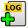

User Manual¶
Load LOG file¶
A Safecast layer (a LOG file) can be loaded from the main toolbar by  Import Log file as new layer. An input file is loaded into QGIS as a new vector point layer. The name of new layer corresponds with the input file (without LOG extension). Measured points are categorized based on the dose rate (ADER) value (see Introduction). By default, the points are categorized in a range from 0.08 to 5.00 microSv/h. See the figure below.
{kind=link}
Figure 1: Loaded Safecast layer with the default style applied.
The alternative style (0.05 - 200.00 microSv/h) can be chosen from the style selector and activated for a selected layer by Apply button.

Figure 2: Style selector to apply predefined point styles.
The default style (0.08 to 5.00 microSv/h) was designed for measurements at low dose rate levels (natural background) with more categories for lower values to distinguish natural background variations.
Note
The color ramp is derived from the default SAGA GIS color style which has proved to be optimal for most of our tasks.
The second available style (0.05 - 200.00 microSv/h) was designed to mimic the Safecast Tile Map default style. This is useful for areas with higher dose rate levels like Fukushima or Chernobyl.

Figure 3: Predefined point styles - 0.08 to 5.00 microSv/h on the left and 0.05 - 200.00 microSv/h on the right.
Tip
If none of above mentioned styles fits your needs and you want to
create your own style, then use native QGIS styling capabilities to be
available in the programme (right click on layer name, choose
Properties from the context menu, then go to Style tab).
Add background map (Google, Bing, OpenStreetMap or offline)¶
By default, there is no background map - you need to add it from offline data (vector or raster files) or to add a layer from online map service like Google or OpenStreetMap, using OpenLayers plugin.
Go to :
Figure 4: Plugins menu.
Write openlayers in Search field, select OpenLayers Plugin and
start installation, using Install Plugin button.
Figure 5: OpenLayers Plugin installation.
Go to the menu and choose
the map layer you want to add - in this case it is Google Hybrid:

Figure 6: OpenLayers Plugin - add layer to map.
The map layer loads on the top, so it covers your data:
Figure 7: Newly added layer covers your data.
To fix this, you just need to drag the background map layer to the bottom with the mouse.
Figure 8: Drag the background layer to the bottom.
Finally you get your measurements to be displayed on the Google map layer.

Figure 9: Loaded Safecast layer with the default style applied.
Offline maps
QGIS can use various offline data sources. Depending on type of your data (raster / vector), level of details and spatial extent, the time needed to refresh the map window after panning or zooming can increase significantly.
Browse attribute data¶
You can display all loaded data from the LOG file in a table form - in GIS programs; it is called Attribute table.
Note
This is not a feature of Safecast plugin - it is a standard, built-in QGIS feature.
In Layers Panel select particular layer, using a mouse. Then click a
right mouse button to show the context menu and select Open
Attribute Table.
Figure 10: Opening the attribute table.
Then the attribute table appears:
Figure 11: Attribute table data.
The table contains both all data imported from the bGeigie LOG file and several additional ones calculated by the plugin - dose rate, local time etc.
Delete measured points¶
The plugin allows a user to select and remove particular measured points and then to save the corrected set as a new LOG file for uploading to Safecast web map. No modification of the data values is possible.
There are various reasons for using this feature:
- After returning home, you forgot to switch off your bGeigie. More than half of the data uploaded to Safecast map to be unnecessary.
- It is comfortable to switch on bGeigie at home, but you do not want to let all people know the exact location of your home. You need to begin either data measurement later, or to end it earlier.
- Some points have missing or incorrect coordinates; you want to drop them from the dataset.
- You have one LOG file containing several trips measured under different conditions. You need to split them into separate files for an upload to Safecast API and to provide a different description (height, facing etc.) for each one.
First select the layer with loaded LOG data you want to trim:
Figure 12: Select the layer to be trimmed.
Then use the  Select features to cut button to select
the points, you want to remove by simply drawing a rectangle over
them:
Select features to cut button to select
the points, you want to remove by simply drawing a rectangle over
them:

Figure 13: Select features to cut.
Tip
Use the panning and zooming tools to zoom or move the map to a desired area and scale. Only while activating panning tool, you can also use a mouse wheel to zoom in or out and arrow keys to move.
Figure 14: QGIS panning and zooming tools.
All selected points will turn yellow:
Figure 15: Selected points are highlighted with yellow color.
Click the Delete selected features button to delete selected points and confirm the deletion:
{kind=link}
Figure 16: Deleting points.
Then the selected points are deleted.
Important
Since the plugin loads the data in the memory (a separate working file is planned for future versions) any changes does not affect the source LOG file. When a user wants to keep changes in the LOG file, it is necessary to save them into a new LOG file.
Save changes into new LOG file¶
Click the Save layer as new LOG file button to save the data as a new LOG file. We recommend to use a different file name. For example, the source data file is 24610908.LOG; we save the trimmed LOG file as 24610908_upload.LOG. By this means it marks that this file is ready for an upload to Safecast API.
{kind=link}
Figure 17: Save layer as LOG file.
Note
While saving into LOG files, additional columns (see [1]) will not be saved. The only way to keep them is to save the layer in other format selected from the context menu in QGIS, because the plugin allows you to save them only as a LOG file.
How to show values of particular point using Identify Features tool¶
If you want to show an exact value (dose rate, CPM and others) for a
particular measured point, then Identify Features is the right tool for you.
Note
This is not a feature of Safecast plugin - it is a standard, built-in QGIS feature.
First select the layer with the loaded LOG data you want to identify:
Figure 18: Select the layer to identify.
Then activate the Identify Features tool in the main toolbar:
Figure 19: Activate Identify tool.
If you cannot see separate points, then use the panning and zooming
tools mentioned in Delete measured points
section to achieve a needed map scale. Then activate Identify tool
again. Click on the point:

Figure 20: Using Identify tool.
And QGIS will display Identify Results window with all data (attributes) for the selected point.
Figure 21: Identify Results window.